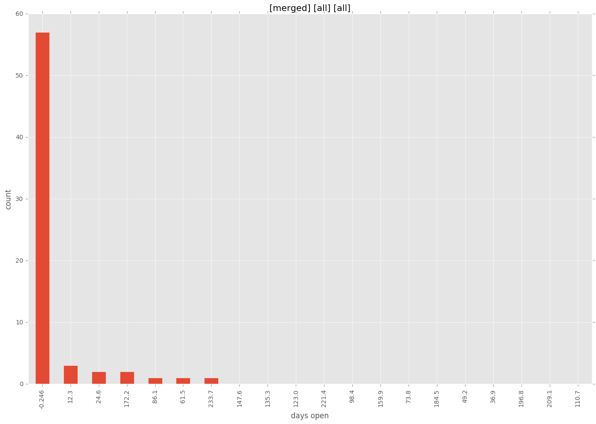
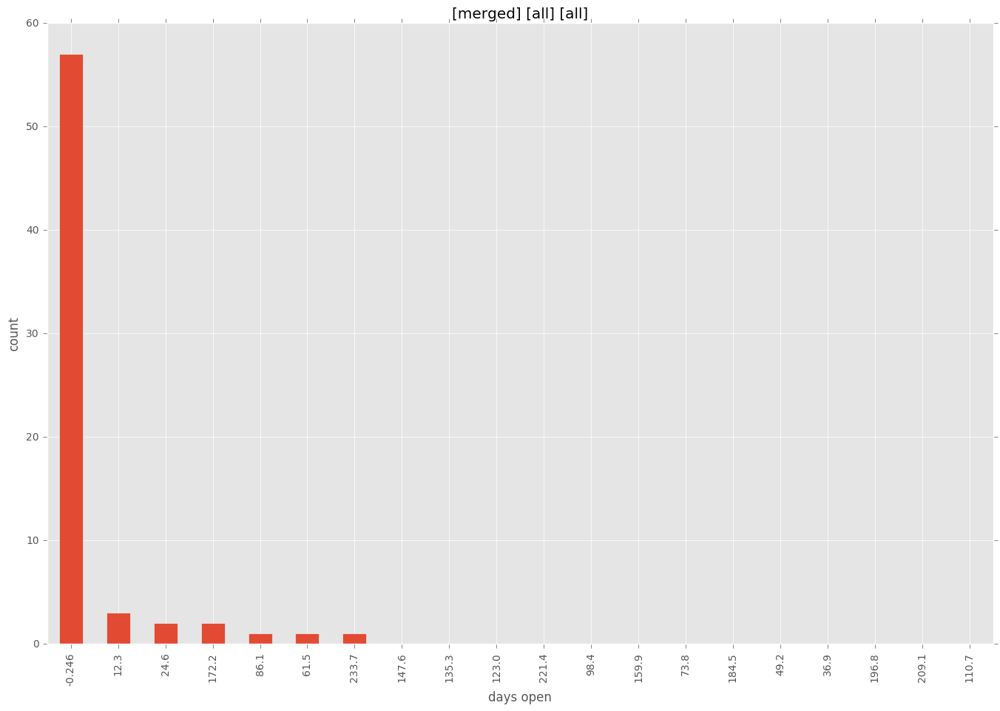

total issue counts
all: 3
bugfix pull request: 99
docs report: 3
documentation pull request: 1
pullrequest: 139
docs pull request: 6
feature pull request: 29
feature idea: 13
issue: 115
bug report: 100
issue history

days open by issue type
feature pull request
count: 37
std: 133.855570724
min: 0
max: 515
median: 18.0
mean: 91.2702702703
all
count: 292
std: 82.0652448987
min: 0
max: 515
median: 0.0
mean: 28.5068493151
documentation pull request
count: 2
std: 0.0
min: 0
max: 0
median: 0.0
mean: 0.0
pullrequest
count: 0
std: nan
min: nan
max: nan
median: nan
mean: nan
docs pull request
count: 10
std: 0.0
min: 0
max: 0
median: 0.0
mean: 0.0
docs report
count: 2
std: 4.94974746831
min: 3
max: 10
median: 6.5
mean: 6.5
bugfix pull request
count: 146
std: 32.6639232907
min: 0
max: 272
median: 0.0
mean: 7.75342465753
feature idea
count: 3
std: 251.155330423
min: 0
max: 437
median: 4.0
mean: 147.0
issue
count: 0
std: nan
min: nan
max: nan
median: nan
mean: nan
bug report
count: 88
std: 93.5294190107
min: 0
max: 466
median: 1.0
mean: 38.1704545455
closures grouped by total days open


 
